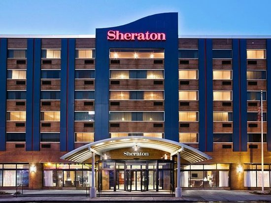

1. HOLIDAY INN EXPRESS
Families will jump into vacation mode at the Holiday Inn. As well as boasting an indoor pool and on-site kids activities, guests younger than 19 stay free when sharing their parents’ room, while kids under 12 can enjoy complimentary meals at the inn’s Anchor Bar restaurant. Why spend more when you can spend less?

2. WHYNDHAM GARDEN
Business or pleasure? Why not both? A recent reno at downtown’s Wyndham Garden has seen rooms redesigned into ambient suites with mood lighting and cozy fireplaces. Convenient touches like in-room microwaves and mini-refrigerators, plus the hotel’s modern media center, make it a great spot for business travelers too.

3. DOUBLE TREE
Free cookies at check-in are always a great start to a stay! But the perks keep going at the recently opened DoubleTree, which features stylish modern suites, a happening lounge bar and best of all, room hot tubs overlooking the Niagara River!
4. SHERATON
Located in the heart of downtown Niagara Falls, the Sheraton offers its trademark wealth of facilities to suit all travelers — from couples to families. Selling points here include an excellent hydro spa and a fun kids arcade. You’ll also find a quirky reef pool and beach club that features a shark tank!

5. COMFORT INN THE POINTE
Comfort Inn The Pointe is on point. Located at the entrance to Niagara Falls State Park and near the Falls, the Comfort Inn is a true gateway to this town’s wonder. Hotel highlights here are friendly staff, free parking and a complimentary continental breakfast.
| Hotel | Address | Starting Rate (USD) | More Details |
|---|---|---|---|
| Holiday Express Inn | 10111 Niagara Falls Boulevard Niagara Falls, New York 14304 United States | $125 | https://www.ihg.com/holidayinnexpress/hotels/us/en/niagara-falls/iagny/hoteldetail |
| Wyndham Garden | 443 Main Street, Niagara Falls, New York, USA, 14301 | $94 | https://www.wyndhamgardenatniagarafalls.com/ |
| Double Tree | 401 Buffalo Avenue Niagara Falls, New York 14303, USA | $167 | https://www.hilton.com/en/hotels/iagbadt-doubletree-niagara-falls-new-york/ |
| Sheraton | 300 3rd St, Niagara Falls, NY 14303 | $130 | https://www.marriott.com/hotels/travel/iagaf-sheraton-niagara-falls/ |
| Comfort Inn The Pointe | 1 Prospect Pointe, Niagara Falls, NY 14303 | $171 | https://www.niagarafallsusa.com/directory/comfort-inn-the-pointe/ |

1. INDIAN RESTAURANT-DOSA PLACE
Unique to Western New York, this South Indian restaurant focuses exclusively on vegetarian fare, specializing in unsweetened crepe-like dosas of various types, as well as nice curries and good Indian desserts. Reasonable pricing, food quality has improved from past.

2. MEXICAN RESTAURANT-LA GALERA
"Family owned business that is a favorite among locals and tourists! Fast, friendly service with a menu that is sure to please everyone. Our festive atmosphere is family friendly! Dine-in, takeout and catering available!"
3. ITALIAN RESTAURANT-MICHAEL's
Homestyle pastas, meats & some American picks in giant portions at this casual Italian stalwart.

4. CHINESE RESTAURANT-CHINA GARDEN
Informal take-out & dine-in joint offering typical Chinese fare such as lo mein & egg rolls.

5. AMERICAN RESTAURANT-HARD ROCK CAFE
Rock ’n’ roll-themed chain with a high-energy vibe serving burgers & American classics.
| Restaurant | Address | More Details |
|---|---|---|
| Dosa Place | 745 E Market St, Niagara Falls, NY 14301 | https://www.dosaplaceny.com/ |
| La Galera | 8215 Niagara Falls Blvd, Niagara Falls, NY 14304 | https://lagaleramexicanrestaurant.com/ |
| Michael's | 3011 Pine Ave, Niagara Falls, NY 14301 | https://www.michaelsniagarafalls.com/ |
| China Garden | 727 Portage Rd, Niagara Falls, NY 14301 | http://us.chinesemenu.com/us/niagara-falls-ny-14301/china-garden/ |
| Hard Rock Cafe | 333 Prospect St, Niagara Falls, NY 14303 | https://www.hardrockcafe.com/location/niagara-falls-usa/ |